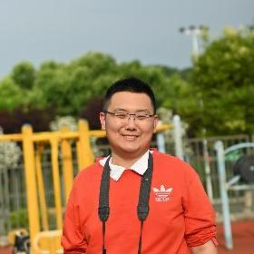

Tingrui Guo
Master's Candidate · Nanjing Normal University
Email:
2575417365@qq.com
2575417365@qq.com
Hometown:
Xuzhou, Jiangsu, China
Xuzhou, Jiangsu, China
Research Interests:
• Vegetation Parameter Retrieval
• Vegetation Parameter Retrieval
Education Background:
• 2022.09–Present: M.Sc. Candidate in Geographic Environment Remote Sensing, College of Geographic Science, Nanjing Normal University, China
• 2018.09–2022.07: B.Sc. in Remote Sensing Science and Technology, Changwang College, Nanjing University of Information Science & Technology (NUIST), China
• 2022.09–Present: M.Sc. Candidate in Geographic Environment Remote Sensing, College of Geographic Science, Nanjing Normal University, China
• 2018.09–2022.07: B.Sc. in Remote Sensing Science and Technology, Changwang College, Nanjing University of Information Science & Technology (NUIST), China
Future Plan:
• Shanghai Institute of Satellite Engineering (Shanghai Academy of Spaceflight Technology)
• Shanghai Institute of Satellite Engineering (Shanghai Academy of Spaceflight Technology)
Honors and Awards:
• First Prize, The 1st Su-Hong Kong-Macao University Remote Sensing Mapping Analysis and Academic Ability Competition (2023.11)
• Third Prize, The 1st "Hyperspectral Imaging Cup" Hyperspectral Data Application Competition (2024.11)
• First Prize, The 1st Su-Hong Kong-Macao University Remote Sensing Mapping Analysis and Academic Ability Competition (2023.11)
• Third Prize, The 1st "Hyperspectral Imaging Cup" Hyperspectral Data Application Competition (2024.11)
Publications: